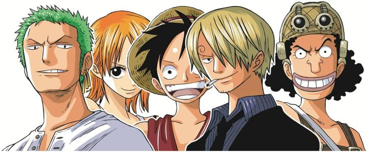
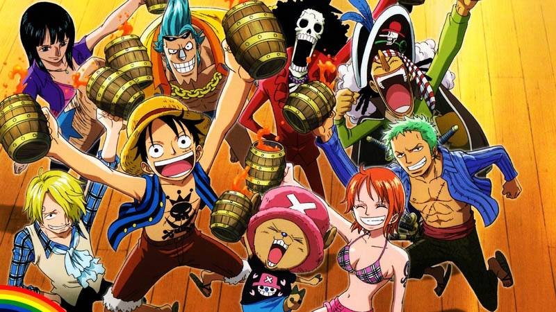

剧情介绍
 本理想成为海贼王的路飞，误食了香克斯（有版本翻译成‘杰克’）收藏的恶魔果实，而变成了橡皮人，恶魔果实的副作用却使他永远不能游泳。
不过他的理想仍然没有改变——成为海贼王，并且找到传说中哥尔·D·罗杰的秘宝-One Piece,冒险就此开始了……
在某个时代海贼是个光荣而又快乐的职业，虽然政府并不支持他们，但是海上的风浪和海上的美丽还是将无数人，特别是男人的梦想完全地吸引了进去。在这个时代的某一天，海盗业忽然疯狂了起来，原来一个著名的大海盗在临刑前忽然说出了他的秘密：他将他那无法衡量的财产藏在了某个小岛上，而去这个小岛的路线就叫伟大航线——One Piece！
路飞所生长的小村庄里曾经是一群以“红发杰克”为首的海盗们的暂居地，而小小的路飞一直希望自己可以成为他们的一员，可惜，在一次非常意外的情况下，他吃了一种叫做“橡皮果”的恶魔果实变成了橡皮人，恶魔果实给予了他这样奇特的本领，但是吃了恶魔果实的人是再也无法学会游泳的……
“没有关系，我只要不掉到海里去就行了……”天性乐观单纯幼稚的路飞并没有放弃他的海盗之路，他和杰克约好，总有一天他会带着他的兄弟们成为海贼王。
所谓漫画就是漫画，路飞长大以后摇着条小船就出海了，可一路上还真让他找到了许多身怀绝技的朋友：目标成为第一剑客的索隆，有着非常优秀的航海直觉的娜美，一流的海上厨师香吉士，特别善于说大话的乌索普以及一流的船医驯鹿乔巴，当然要得到这些伙伴是非常不容易的，路飞一路千辛万苦地和其他海盗们打斗，他唯一的长处就是那笑对死亡和永不言败的精神！
伟大航线！这是一个任凭再优秀的海盗也无法预料其危险的地方，这是一个目前还没有人可以到达的地方，这是一个摧毁人类一切常识信心和勇气的地方……可是路飞他们终于进入了，One Piece的故事将要完全展开了。
在One Piece的世界中，整个海洋被一条贯穿南北的大陆和叫做伟大航道的海区划分为东、西、南、北四块海洋。
有一个人，他拥有世上一切财富、声望和权利，他就是海贼王——哥尔·D·罗杰
传说中的One Piece就被埋藏在伟大航道。
他临死前说的一句话，驱使全世界的人进入大海——“想要我的财富吗？可以的。我把一切都放在那里，你们去找吧！”
于是，大海贼时代开始了——
[追逐梦想的少年]
“我可是要成为海贼王的男人啊！”
这就是我们的主人公——路飞的宣言。路飞拥有恶魔果实能力，身体可以任意伸长，但永远学不会游泳。他是典型单细胞的家伙，单纯、热血、少根筋，不过真的是很可爱呢~~~而他的周围也逐渐聚集起一群同样有梦想、有实力的热血伙伴——索隆、娜美、香吉士、驯鹿医生乔巴、乌索普、罗宾、弗兰奇和布鲁克。
